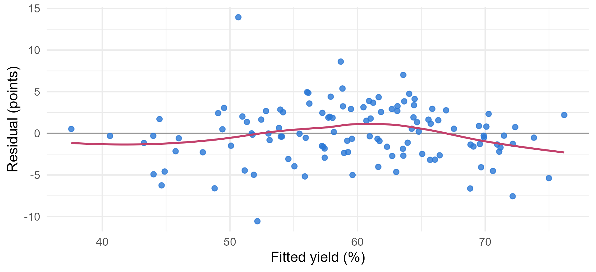
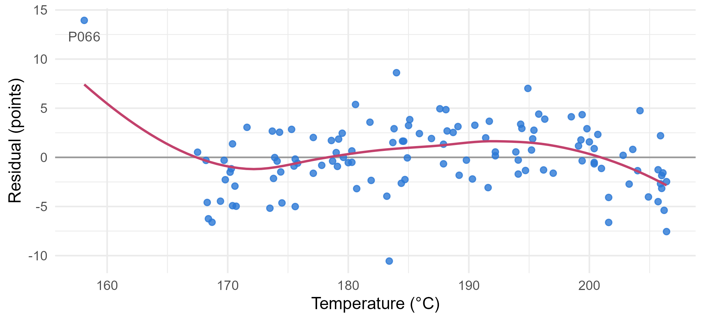
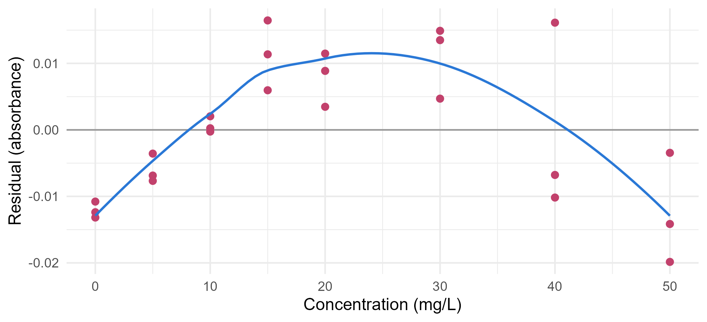
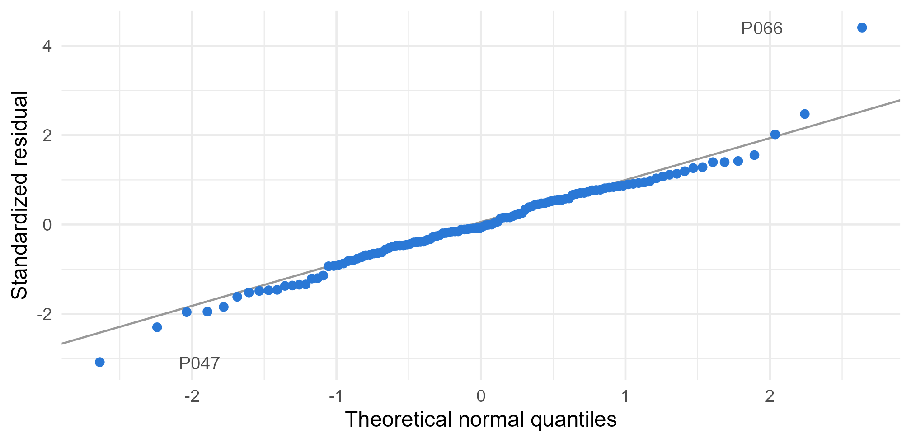
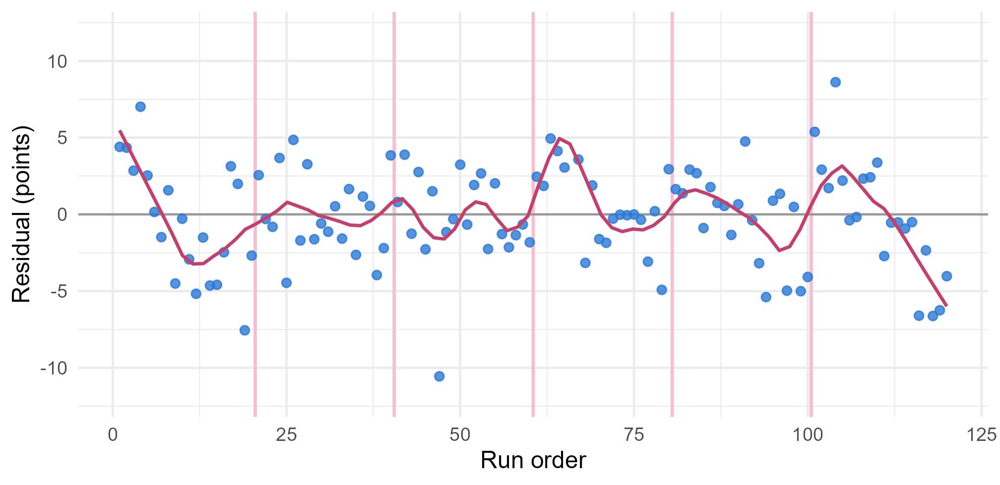

Module 2 · Lesson 8 of 15 Week 38 of 160 About 5–7 hours
Checking model assumptions
Reading the residuals for curves, funnels, outliers and patterns in time
Use residual plots to check linearity, constant variance, normality and independence, back them up with formal tests (lack of fit, Breusch-Pagan, Bartlett, Shapiro-Wilk, Durbin-Watson), and decide what to do when an assumption fails.
Every standard error, test and interval since Lesson 3 has rested on four assumptions: a Linear mean, Independent errors, Normal errors and Equal variance. Until now, we took them on trust. This lesson checks them, and the evidence is in the residuals: everything the model couldn’t explain. A good model leaves residuals that look like pure, patternless noise. Any pattern you find is something the model missed, and it usually tells you what to do next.
Two models are on trial today: Lesson 7’s interaction model for the process study, and Lesson 2’s calibration line, the one with R^2 = 0.9989.
Detective time! The residuals are the witnesses. They remember everything the model forgot. Let’s interview them one at a time.
In this lesson you’ll:
- plot residuals against the fitted values and the predictors, to check linearity
- spot non-constant variance, and test for it
- check normality with a Q-Q plot, and find the runs that don’t fit
- plot residuals in time order, to check independence, and measure autocorrelation
- test a calibration line for lack of fit, using its replicates
- decide what to do when an assumption fails
The residuals and their plots
Here’s the model from last lesson, with its residuals added to the data:
fit <- lm(yield_pct ~ temp_C * catalyst + residence_min + feed_water_ppm, data = study)
study <- mutate(study, fitted = fitted(fit), resid = resid(fit))The most basic plot is the residuals against the fitted values. If the model is right, the points should form a shapeless horizontal band around zero, the same width everywhere:
ggplot(study, aes(x = fitted, y = resid)) +
geom_hline(yintercept = 0, color = "grey60") +
geom_point(size = 1.8, color = "#2a78d6", alpha = 0.8) +
geom_smooth(method = "loess", formula = y ~ x, se = FALSE, color = "#C2416C", linewidth = 0.8) +
labs(x = "Fitted yield (%)", y = "Residual (points)") +
theme_minimal(base_size = 12)
The rose curve is a loess smoother, a flexible local average that follows any trend in the residuals. Here it stays close to zero. Mostly a band, then, apart from one point way up at +14 and another down at −11. Good so far, but this plot mixes all the predictors together. The next steps look at each assumption on its own.
Base R draws four standard diagnostic plots with a single command, plot(fit), and you’ll see them in many books. This lesson draws its own, to look at one thing at a time.
Linearity
A missing curve shows up best when you plot the residuals against each numerical predictor in turn:
ggplot(study, aes(x = temp_C, y = resid)) +
geom_hline(yintercept = 0, color = "grey60") +
geom_point(size = 1.8, color = "#2a78d6", alpha = 0.8) +
geom_smooth(method = "loess", formula = y ~ x, se = FALSE, color = "#C2416C", linewidth = 0.8) +
annotate("text", x = 158.1, y = 12.3, label = "P066", size = 3.5, color = "grey30") +
labs(x = "Temperature (°C)", y = "Residual (points)") +
theme_minimal(base_size = 12)
Two things jump out. One run, P066, sits all alone at 158 °C, far to the left of every other run, with a huge residual (it drags the smoother up at the far left, too). And between 170 and 205 °C, the residuals form a gentle arch: below zero at both ends, above zero in the middle. That’s what a missing curve looks like. The yield rises with temperature, but more slowly at the top, and a straight line can’t bend to follow it. (You’ll add the curve in Lesson 9.)
Your turn. Put a number on the arch. Split the temperatures into four bands, and compute the mean residual in each. The residuals are already in study$resid.
Average the resid column.
study |>
mutate(band = cut(temp_C, breaks = c(-Inf, 175, 185, 195, Inf))) |>
group_by(band) |>
summarise(n = n(), mean_resid = mean(resid))−1.25 below 175 °C, +0.13 and +1.53 in the middle bands, −0.38 above 195 °C. Down, up, down: the straight line runs too high at both ends and too low in the middle. (And the lowest band’s mean includes P066’s +14, without which it would be lower still.)
Constant variance
The calibration line tells the next story. Here are its residuals against concentration:
fit_cal <- lm(absorbance ~ conc_mgL, data = calibration)
calibration |>
mutate(resid = resid(fit_cal)) |>
ggplot(aes(x = conc_mgL, y = resid)) +
geom_hline(yintercept = 0, color = "grey60") +
geom_point(size = 2, color = "#C2416C") +
geom_smooth(method = "loess", formula = y ~ x, se = FALSE, color = "#2a78d6", linewidth = 0.8) +
labs(x = "Concentration (mg/L)", y = "Residual (absorbance)") +
theme_minimal(base_size = 12)
Remember, this line has R^2 = 0.9989. Its residuals show two problems at once:
- Another arch, much clearer than the process study’s: negative at both ends, positive in the middle. The absorbance bends down at high concentrations, which is the detector starting to saturate. That’s why the line’s intercept missed the blanks in Lesson 2: the straight line tilts to compromise with the curve, and lifts its left end off the blanks.
- A funnel. The triplicates at the top of the range are far more spread out than the ones at the bottom. Their scatter grows with the absorbance, as it often does for instruments. That breaks the equal-variance assumption.
Why does unequal variance matter? Least squares gives every point the same weight, so the noisy high standards get as much say as the precise low ones. The estimates stay unbiased, but they’re less precise than they could be, and the standard errors, which assume one \sigma for every point, are wrong: too narrow in some places, too wide in others. A prediction interval for a low-concentration sample would be far too wide, and one for a high-concentration sample too narrow.
There are formal tests, too. The Breusch-Pagan test regresses the squared residuals on the predictors: if the spread changes with them, it finds the trend. When the data have replicates, as the calibration does, you can compare the replicates’ variances directly with Bartlett’s test: bartlett.test(absorbance ~ factor(conc_mgL), data = calibration) gives p = 0.036.
Your turn. Measure the funnel. Compute the standard deviation of the three replicates at each concentration.
sd(absorbance) within each group.
calibration |>
group_by(conc_mgL) |>
summarise(sd = sd(absorbance))About 0.0015 for the standards from 0 to 10 mg/L, and about 0.009 for those from 30 to 50 mg/L: six times as big. These replicate standard deviations don’t depend on any model, so they show the funnel even more cleanly than the residuals do. With only three readings per standard, each one is rough, but the trend is clear.
Normality
To check whether the residuals look normal, plot them in a normal Q-Q plot (Lesson 0.10): sorted residuals against the values you’d expect from a normal distribution. Normal residuals fall along a straight line. It’s best to use standardized residuals, which are divided by their estimated standard deviation, s\sqrt{1 - h_{ii}} (Lesson 4), so that they’re all on the same scale and values beyond ±3 stand out. rstandard() computes them:
study |>
mutate(std_resid = rstandard(fit)) |>
ggplot(aes(sample = std_resid)) +
geom_qq_line(color = "grey60") +
geom_qq(size = 1.8, color = "#2a78d6") +
annotate("text", x = c(2.15, -2.15), y = c(4.4, -3.1), label = c("P066", "P047"), size = 3.5, color = "grey30", hjust = c(1.2, -0.2)) +
labs(x = "Theoretical normal quantiles", y = "Standardized residual") +
theme_minimal(base_size = 12)
The middle of the plot hugs the line nicely. But at the ends, two runs break away: P066, 4.4 standard deviations above its fitted value, and P047, 3.1 below. With 120 normal residuals, the most extreme ones would usually be around ±2.5 to ±3, so 4.4 is very unusual indeed. The Shapiro-Wilk test puts a number on it: shapiro.test(resid(fit)) gives p = 0.030.
Before testing anything else, look at what these two runs are:
study |>
filter(run_id %in% c("P047", "P066")) |>
select(run_id, temp_C, jacket_C, residence_min, yield_pct, resid, notes)
#> # A tibble: 2 × 7
#> run_id temp_C jacket_C residence_min yield_pct resid notes
#> <chr> <dbl> <dbl> <dbl> <dbl> <dbl> <chr>
#> 1 P047 183. 194. 57.6 41.6 -10.6 Stirrer tripped twice, r…
#> 2 P066 158. 196. 38.6 64.6 13.9 <NA>P047 has an explanation in the notes: the stirrer tripped twice, so of course it underperformed. P066 has no note. But its temperature of 158.1 °C is more than nine degrees below any other run, in a study whose lowest set point was 170 °C. Its jacket, which normally runs 8 to 14 °C hotter than the reactor, was at 196.3 °C, 38 degrees hotter. Smells like a typo… Lesson 10 is about unusual points like these: how to find them systematically, how much damage they do, and what to do with them. For now, just keep them in mind.
How much does normality matter? Less than the other three assumptions, for the coefficients: thanks to the central limit theorem, their sampling distributions are close to normal in large samples even when the errors aren’t. It matters more for prediction intervals, which are about single observations, and a single wild residual matters a lot, normal or not.
Your turn. Run the Shapiro-Wilk test on the residuals of the same model fitted without P047 and P066. Does the rest look normal?
The other run to leave out is "P066".
rest <- filter(study, !run_id %in% c("P047", "P066"))
fit_rest <- lm(yield_pct ~ temp_C * catalyst + residence_min + feed_water_ppm, data = rest)
shapiro.test(resid(fit_rest))p = 0.85: without those two runs, the residuals look perfectly normal. The “non-normality” was really two outliers. That’s common, and it’s why you should look at a Q-Q plot instead of just reading a test’s p-value.
Independence
The last assumption is the sneakiest: the errors shouldn’t be related to one another. The usual way to break it is time. If something drifts while the data are collected, runs close together in time share part of their error, and their residuals are correlated. That’s called autocorrelation, and the way to look for it is to plot the residuals in the order the runs were made:
run_order <- seq_len(nrow(study))
ggplot(mutate(study, run = run_order), aes(x = run, y = resid)) +
geom_vline(xintercept = seq(20.5, 100.5, by = 20), color = "#F4C0D1", linewidth = 0.8) +
geom_hline(yintercept = 0, color = "grey60") +
geom_point(size = 1.8, color = "#2a78d6", alpha = 0.8) +
geom_smooth(method = "loess", formula = y ~ x, span = 0.15, se = FALSE, color = "#C2416C", linewidth = 0.8) +
labs(x = "Run order", y = "Residual (points)") +
coord_cartesian(ylim = c(-12, 12)) +
theme_minimal(base_size = 12)
The pink lines mark the days when both reactors got a fresh catalyst charge, every 20 runs. Between them, the residuals slide downhill: high just after a change, low just before the next one. A sawtooth! The model doesn’t know that the catalyst loses activity as it ages, so the ageing ends up in the residuals, and neighbouring runs share it.
Why does that matter? Correlated errors carry less information than independent ones: ten runs on one tired catalyst charge aren’t ten independent looks at the process. The model then overstates its precision, so the standard errors are too small, and the tests too confident.
Two ways to measure it:
- The lag-1 autocorrelation: the correlation between each residual and the next one. Here it’s 0.23.
- The Durbin-Watson statistic, d = \sum_{t=2}^{n}(e_t - e_{t-1})^2 \big/ \sum_{t=1}^{n} e_t^2. It’s about 2(1 - r_1), where r_1 is the lag-1 autocorrelation, so independent residuals give about 2, and positive autocorrelation pushes it towards 0.
lmtest::dwtest(fit)gives its p-value.
The independence assumption depends on the order of the rows, so the residuals must be in time order, as they are here. And “time” isn’t the only way to be related: runs from the same feed lot, samples from the same batch, or measurements from the same analyst can share errors too.
Your turn. The sawtooth suggests a culprit: the catalyst charge’s age, which the data record as catalyst_age (1 to 10). Compute the mean residual for each age.
Group by catalyst_age.
study |>
group_by(catalyst_age) |>
summarise(mean_resid = mean(resid))From +2.6 and +3.3 on a fresh charge down to −2.7 on its tenth run. Plotting residuals against a variable that’s not in the model is one of the best diagnostics there is: if they’re related to it, it belongs in the model.
Your turn. Compute the Durbin-Watson statistic by hand.
The denominator is the sum of the squared residuals, e^2. (diff(e) gives each residual minus the one before it.)
e <- study$resid
sum(diff(e)^2) / sum(e^2)d = 1.53, below 2, which signals positive autocorrelation. lmtest::dwtest(fit) gives p = 0.004: strong evidence that the errors aren’t independent.
Lack of fit: a test with replicates
The calibration’s arch can be tested formally, thanks to its triplicates. The idea: the three readings at each concentration differ only by pure measurement error, since they have the same x. So the scatter within the triplicates estimates \sigma^2 without using any model at all. That’s called pure error. Whatever residual variation is left beyond pure error must come from the straight line missing the averages: lack of fit.
The test compares the straight line with a model that fits each concentration’s average exactly, by treating the concentration as a category. The line is nested in it (it’s the special case where the eight averages fall on a line), so anova() can compare them:
anova(fit_cal, lm(absorbance ~ factor(conc_mgL), data = calibration))
#> Analysis of Variance Table
#>
#> Model 1: absorbance ~ conc_mgL
#> Model 2: absorbance ~ factor(conc_mgL)
#> Res.Df RSS Df Sum of Sq F Pr(>F)
#> 1 22 0.00266578
#> 2 16 0.00071282 6 0.001953 7.306 0.0006843 ***
#> ---
#> Signif. codes: 0 '***' 0.001 '**' 0.01 '*' 0.05 '.' 0.1 ' ' 1The straight line’s SSE is 0.00267, and pure error accounts for only 0.00071 of it. The other 0.00195 is lack of fit: F = 7.3 on 6 and 16 degrees of freedom, p = 0.0007. The straight line is definitely the wrong shape, R^2 = 0.9989 notwithstanding. Analytical chemists, take note: a high R^2 is not a test of linearity. This is.
This test needs replicates, real repeated measurements at the same x. When you design a calibration or an experiment, include a few. They give you an estimate of \sigma that doesn’t trust the model.
Your turn. Run the lack-of-fit test.
Treat the concentration as a category: factor(conc_mgL).
saturated <- lm(absorbance ~ factor(conc_mgL), data = calibration)
anova(fit_cal, saturated)F = 7.3, p = 0.0007: significant lack of fit. In Lesson 9, a curve will pass the same test.
When an assumption fails
Finding a problem is half the job. Here’s what usually fixes each one:
| Problem | What you see | What to try |
|---|---|---|
| Curvature | an arch or a trend in the residuals against a predictor | add a curved term, like x^2, or transform x or y (Lesson 9) |
| Non-constant variance | a funnel | transform y, or use weighted least squares (Lesson 9) |
| Outliers | points far from the rest, in any plot | investigate them before anything else (Lesson 10) |
| Non-normality | a curved Q-Q plot | often a sign of outliers or a missing variable. Otherwise, with plenty of data, it matters little for the coefficients. Transform, or use robust methods |
| Dependence | patterns in time or groups | add the missing variable (here, the catalyst age), or use models for correlated data (Module 6) |
Two more pieces of advice:
- Plots first, tests second. With lots of data, formal tests flag deviations too small to matter. With little data, they miss big ones. Every test in this lesson was backed by a plot.
- Fix one thing at a time. The problems interact: P066 inflated the non-normality, and it also distorted the arch. Deal with the outliers first, then look again.
Challenge round
Challenge 1 · What does “good” look like? It’s easy to see patterns in pure noise. To calibrate your eye, compute the Durbin-Watson statistic for 120 independent random numbers.
Use the same formula as before, on z: sum(diff(z)^2) / sum(z^2).
set.seed(2026)
z <- rnorm(120)
sum(diff(z)^2) / sum(z^2)2.2, close to 2, as independent errors should give. Try a few other seeds: you’ll see values from about 1.7 to 2.3. That’s the natural wobble, and it’s why 1.53, with the p-value to back it, counts as real evidence.
Challenge 2 · Fixing the independence problem. Add catalyst_age to the model, and recompute the Durbin-Watson statistic. How much yield does each run of catalyst age cost?
Add catalyst_age to the formula.
fit_age <- lm(yield_pct ~ temp_C * catalyst + residence_min + feed_water_ppm + catalyst_age, data = study)
e <- resid(fit_age)
c(age_coef = unname(coef(fit_age)["catalyst_age"]), dw = sum(diff(e)^2) / sum(e^2))Each extra run on a charge costs 0.62 points of yield, so a charge’s tenth run makes about 5.5 points less than its first. And the Durbin-Watson statistic is back up to 1.93 (p = 0.32): the dependence is gone, because it was never in the errors at all. It was a missing variable. That’s a useful question to ask of any pattern in the residuals: what’s causing it, and did you measure it? (Whether replacing the catalyst more often is worth it is now a sum the plant can do.)
Quick quiz
1. The residuals against temperature form an arch: negative at both ends, positive in the middle. What does that suggest?
A systematic shape in the residuals against a predictor means the mean isn’t linear in that predictor.
2. The residuals fan out as the concentration grows. Which assumption fails, and what’s the consequence?
Least squares stays unbiased, but it weights the noisy points as heavily as the precise ones, and its standard errors assume one \sigma everywhere.
3. The Shapiro-Wilk test rejects normality, but the Q-Q plot shows two wild points and a straight line for everything else. What’s the best next step?
The “non-normality” here is really two outliers. Without them, the residuals passed the test easily. Find out what happened in those runs.
4. The Durbin-Watson statistic is 1.53 for 120 residuals in time order. What does it suggest?
Independent errors give values close to 2, and positive autocorrelation pushes it towards 0. Here the p-value was 0.004.
5. What does a lack-of-fit test need?
The replicates give an estimate of pure error that doesn’t depend on the model. Lack of fit is whatever the model’s residuals have beyond that.
6. The calibration line has R^2 = 0.9989 and fails the lack-of-fit test with p = 0.0007. How can both be true?
With very precise measurements, even a small, systematic bend is detectable, and the line is close to the points everywhere anyway.
Wrap-up
You can now cross-examine a model’s residuals! Here’s what you’ve learned:
- Residual plots are the main tool: against the fitted values, against each predictor, against variables not in the model, in a Q-Q plot, and in time order. A good model leaves a patternless band.
- Linearity: an arch or trend against a predictor means a missing curve. Both models had one.
- Equal variance: a funnel means the spread changes. Replicates show it directly. Breusch-Pagan and Bartlett test it.
- Normality: check with a Q-Q plot of standardized residuals (
rstandard()). Shapiro-Wilk tests it. Wild points matter more than mild skewness. - Independence: plot the residuals in time order. Durbin-Watson (\approx 2 when independent) and the lag-1 autocorrelation measure it. Here, a missing variable, the catalyst age, caused the dependence.
- Lack of fit: with replicates, compare the model with one that fits each group’s mean,
anova(fit, lm(y ~ factor(x))). R^2 is not a linearity test. - Two suspects: P047 (a stirrer trip, in the notes) and P066 (a temperature that doesn’t match its jacket). Lesson 10 takes the case.
TipPractice in RStudio (optional, about an hour)
Download process_study.csv and calibration.csv into your project’s data-raw/ folder, and install the lmtest package.
- The four standard plots. Run
par(mfrow = c(2, 2)); plot(fit)for the process study model. Which plots show P066 and P047? What’s the “Residuals vs Leverage” plot? (Lesson 10 explains it.) - Formal tests. Run
lmtest::bptest(fit),lmtest::dwtest(fit)andshapiro.test(resid(fit)), then repeat them without P047 and P066. Which results change? - Residuals against everything. Plot the residuals against every column of
studythat isn’t in the model:reactor,stir_rpm,ambient_C,operator_id,supplier,lot_id. Do any of them show a pattern? (Use boxplots for the categorical ones.) - A lineup. Simulate four sets of residuals from a correct model (
rnorm(120)), plot them next to the real ones in a random order, and ask a friend which plot is the real one. If they can pick it out, the pattern is real. This trick has a name: the lineup protocol.
NoteKey words from this lesson
- Residual plot
- A plot of the residuals against the fitted values, a predictor, a variable not in the model, or the run order, used to look for patterns the model missed.
- Loess smoother
- A flexible curve, computed from local weighted averages, that follows trends in a scatterplot without assuming a shape.
- Standardized residual
- A residual divided by its estimated standard deviation, s\sqrt{1 - h_{ii}}, so that all residuals are on the same scale.
- Heteroscedasticity
- Non-constant error variance. The opposite is homoscedasticity.
- Breusch-Pagan test
- A test for non-constant variance that regresses the squared residuals on the predictors.
- Autocorrelation
- Correlation between errors that are close together in time (or space).
- Durbin-Watson statistic
- d = \sum (e_t - e_{t-1})^2 / \sum e_t^2, about 2 for independent errors and closer to 0 for positive autocorrelation.
- Pure error and lack of fit
- With replicates, the residual variation splits into the scatter within replicates (pure error) and the model’s failure to fit the group means (lack of fit).
NoteWant to read more?
- Penn State STAT 501, Lesson 4: SLR Model Assumptions. Residual plots for each assumption, with many examples. (The lack-of-fit test is in Lesson 2, sections 2.8 to 2.10.)
- NIST/SEMATECH e-Handbook of Statistical Methods, “How can I tell if a model fits my data?”. Engineering-flavored residual analysis, including lack of fit.
- Hadley Wickham, Dianne Cook, Heike Hofmann and Andreas Buja, “Graphical inference for infovis”, IEEE Transactions on Visualization and Computer Graphics (2010). The paper behind the lineup protocol in the practice exercises.